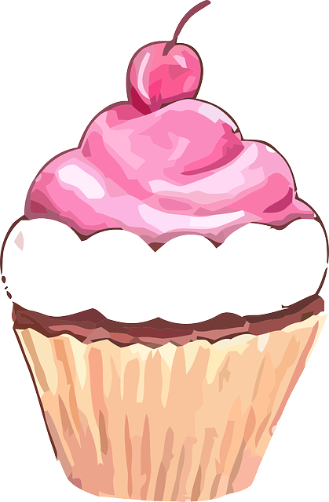
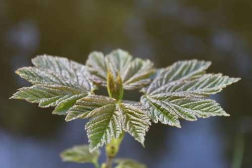
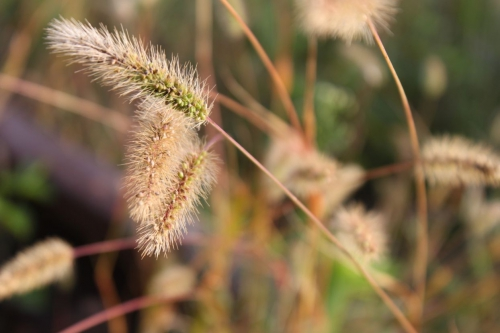
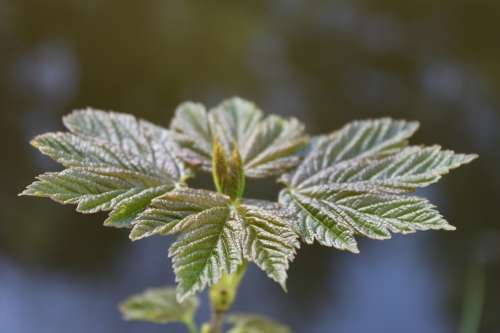
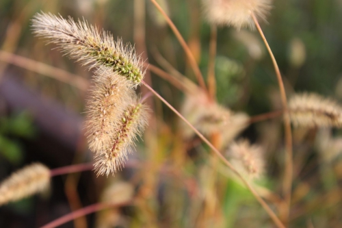

Cześć :)
Mam na imię Magda, jestem studentką informatyki. W wolnych chwilach uwielbiam robić zdjęcia otaczającej mnie natury oraz ćwiczyć na siłowni. Mimo treningów nie dostałam jeszcze bzika na punkcie bycia fit więc czasem lubię upiec jakieś pyszności.Nigdy nie przywiązywałam wagi to sportu, lekcje wf-u były dla mnie po prostu nudne. Jednak gdy się skończyły brakowało mi chociaż minimalnej aktywnośći fizycznej. Dlatego postanowiłam zapisać się na siłownię. Zobaczyłam tam czym jest trening siłowy, który teraz zagościł na stałe w moich planach treningowych.
Czasem dla urozmaicenia lubię ćwiczyć z Natalią Gacką- Dressler lub Fit Matką Wariatką.
Gdy tylko mam ochotę na coś pysznego zawsze szukam przepisu na swojej ulubionej i sprawdzonej stronie- kwestia smaku.
Jest wiele rodzajów fotografii. Dla mnie najciekawszym jest makrofotografia, która pozwala spojrzeć na otaczający świat w inny sposób.
 


